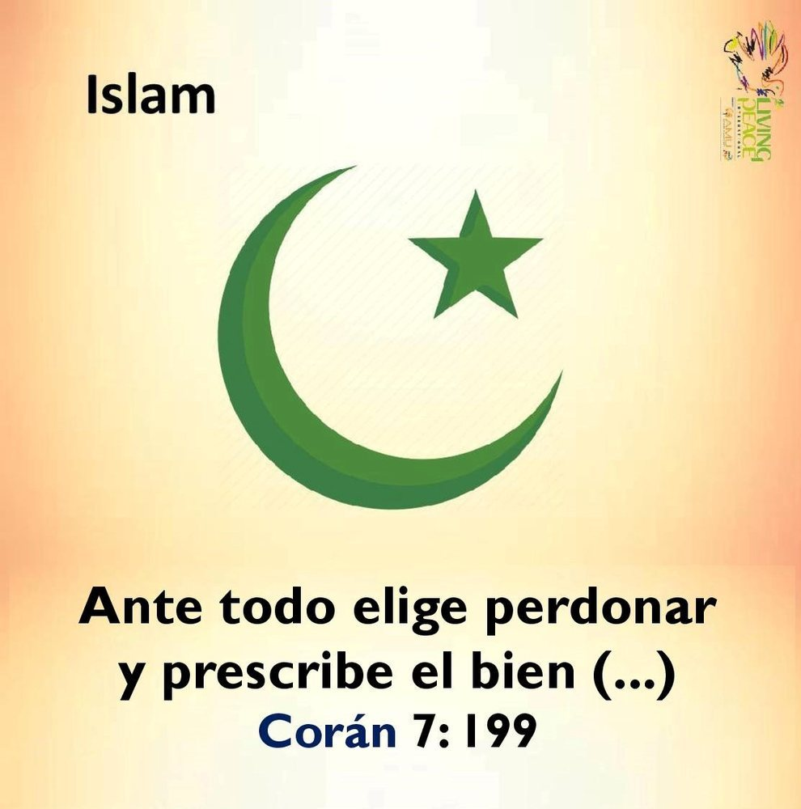
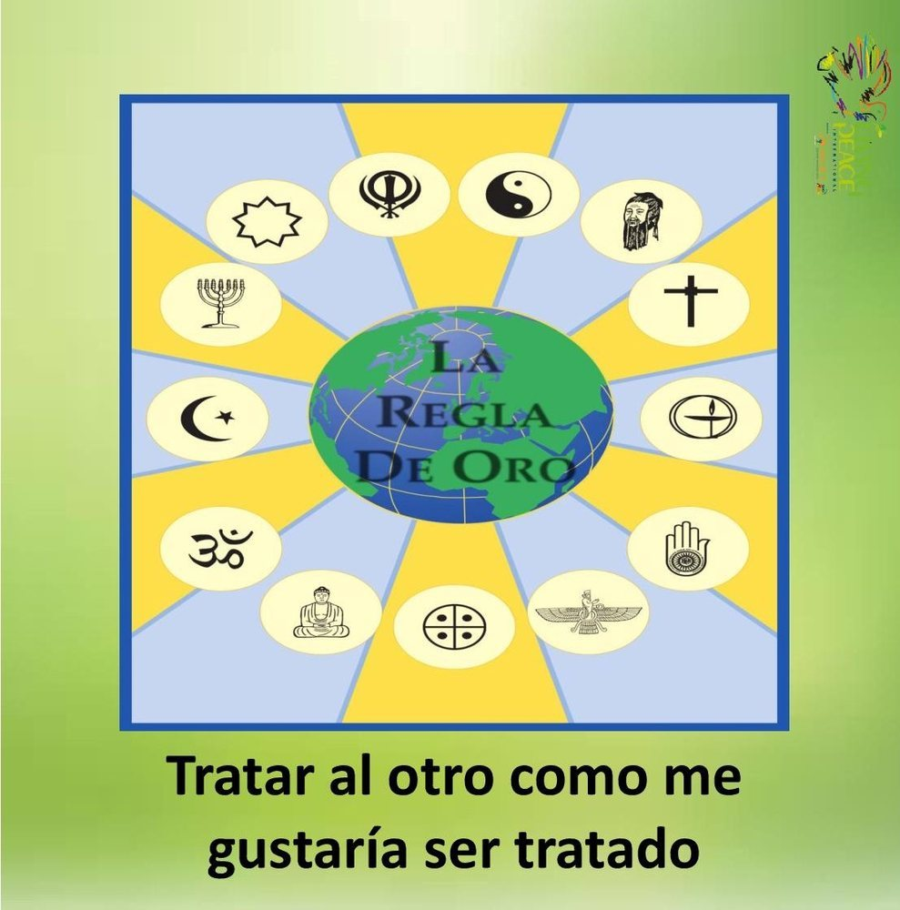
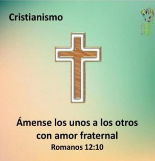
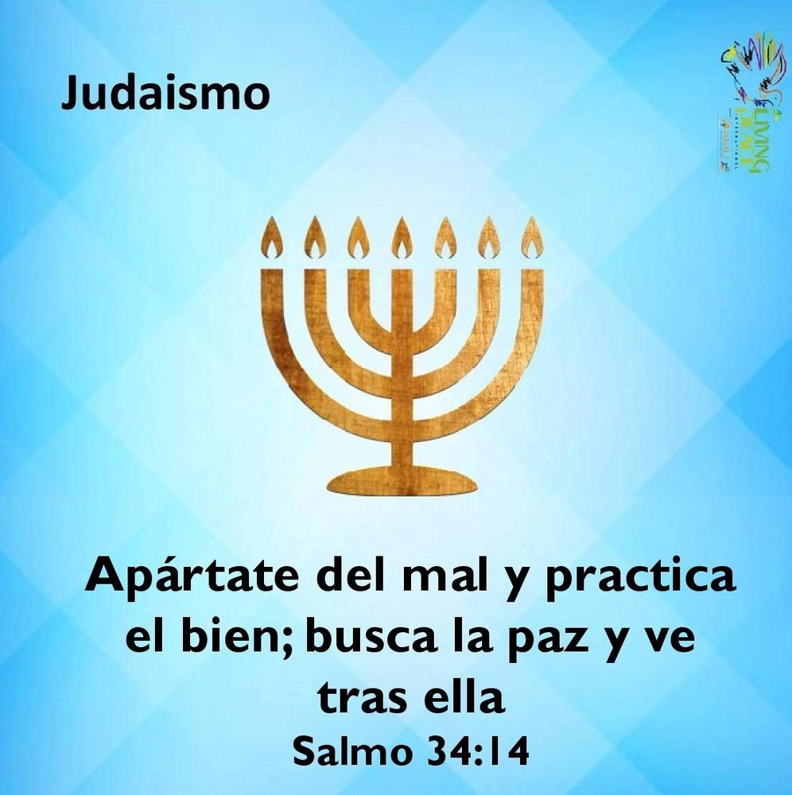
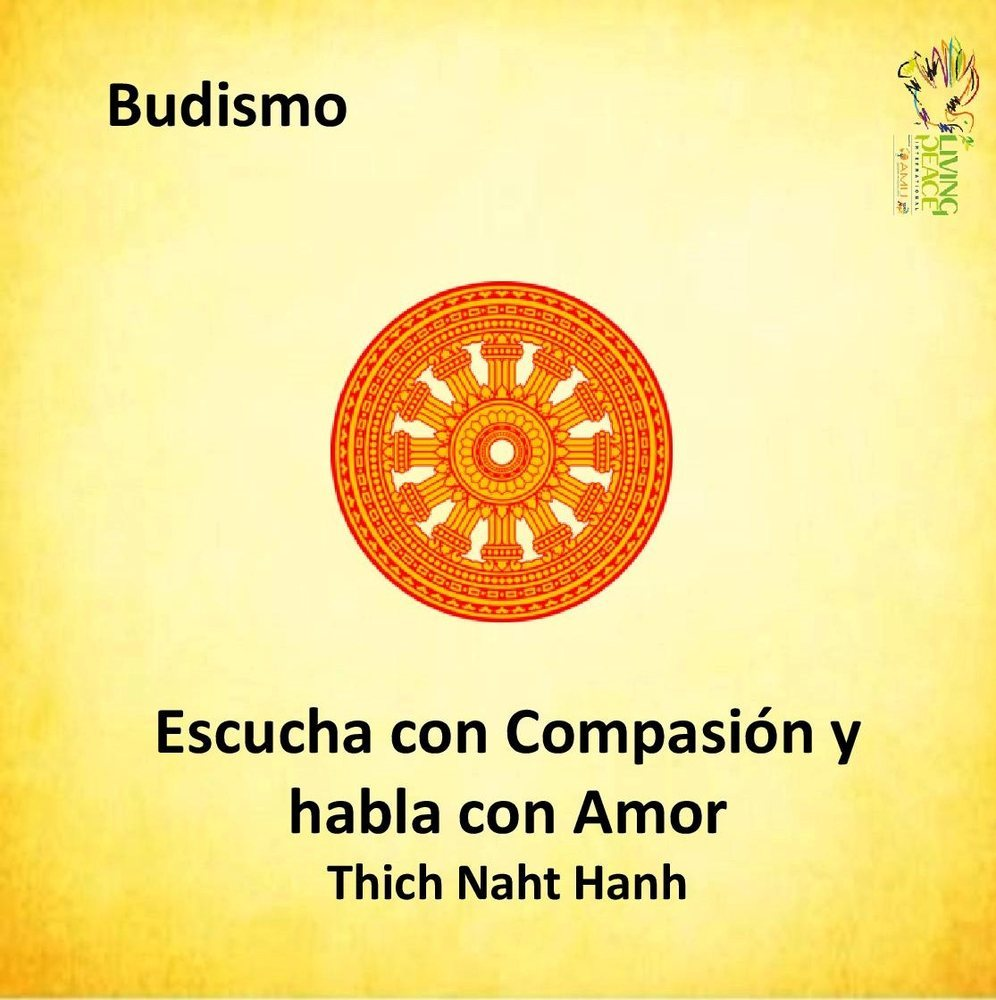
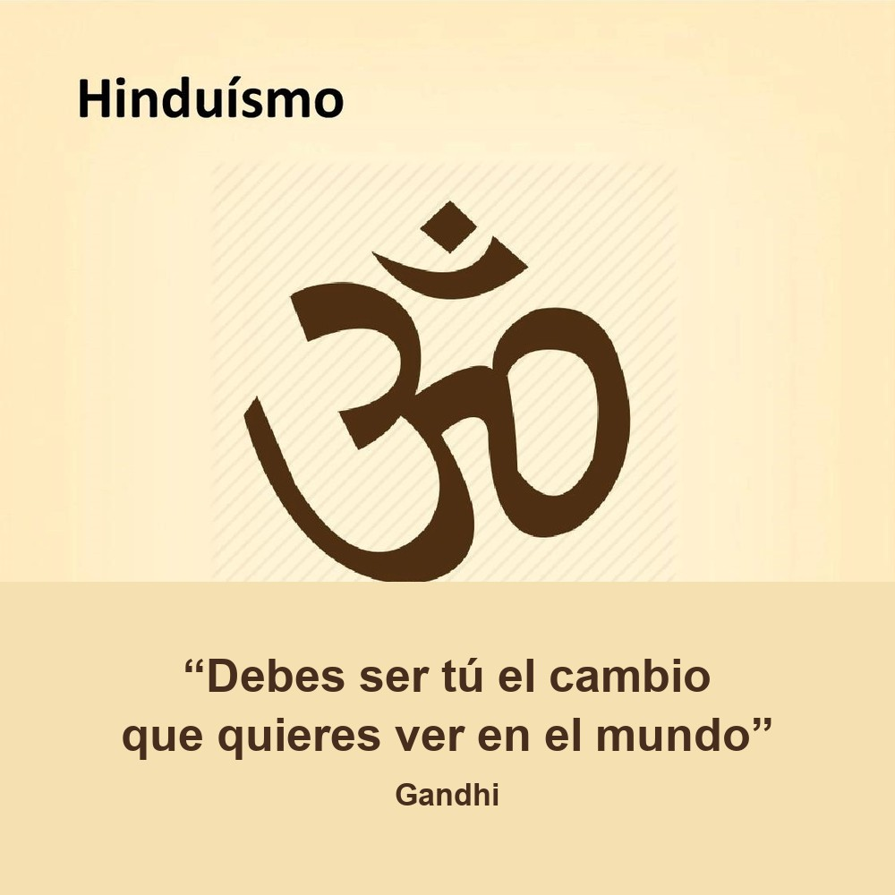

TU INVITACIÓN DE PAZ
Islam
Elige perdonar y hacer el bien: la paz empieza por una decisión concreta.
DIÁLOGO INTERRELIGIOSO PARA LA PAZ
Lanza el dado y descubre una invitación de distintas tradiciones religiosas para vivir la paz desde el respeto, la compasión y la fraternidad.






Elige perdonar y hacer el bien: la paz empieza por una decisión concreta.
LAS SEIS CARAS
Pulsa una tarjeta para descubrir su mensaje.
“La paz crece cuando escuchamos lo sagrado que hay en el otro.”
Respeto · Diálogo · Fraternidad